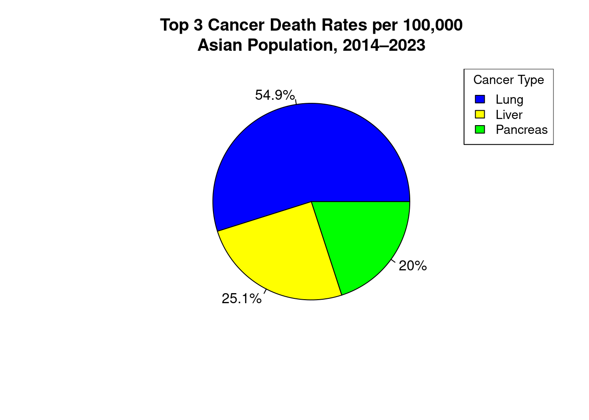
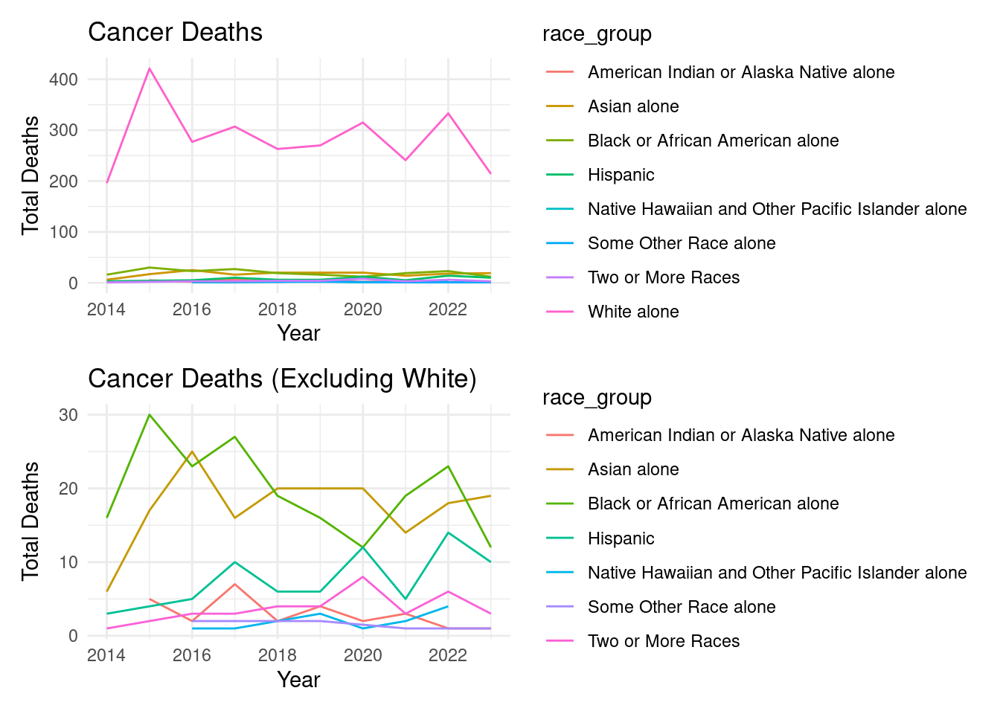

Findings

The charts above display the top three causes of cancer-related deaths per 100,000 people from 2014 to 2023 across four racial and ethnic groups in Multnomah County: White, Black, Hispanic, and Asian populations. Lung cancer consistently emerges as the leading cause of cancer mortality across all groups, accounting for over half of all top cancer deaths in each demographic. For White and Hispanic populations, Pancreatic cancer follows, while Liver and Prostate cancers are more prominent among Black individuals. Among Asians, Liver and Pancreatic cancers round out the top three. These charts highlight both the commonality of lung cancer as a critical health issue and the variation in secondary cancer burdens, suggesting a need for tailored public health strategies across communities.
The line graph presents lung cancer death rates per 100,000 individuals across four racial and ethnic groups in Multnomah County from 2014 to 2023. The White population shows a significantly higher death rate throughout the period, with a sharp spike in 2015 followed by a gradual decline. Black, Asian, and Hispanic populations maintain relatively low and stable rates, with the Hispanic group consistently showing the lowest mortality. However, this visualization should be interpreted with caution. The data is skewed due to population size differences—there is a much larger White population in the county, which naturally results in more recorded deaths. As such, while the graph gives a sense of trend over time, it is not the most effective for making direct comparisons across racial groups without adjusting for population proportion or using standardized visualization methods.
This graph highlights the lung cancer death rates per 100,000 for the Asian, Black, and Hispanic populations in Multnomah County from 2014 to 2023. By excluding the White population, which had significantly higher death rates, the visualization allows for a clearer comparison among these three groups. The data reveals that the Black population experienced the highest lung cancer mortality across most years, peaking in 2016. The Hispanic group generally follows, with fluctuating but elevated rates, while the Asian population consistently shows the lowest death rates throughout the decade. This refined visualization offers a more focused view of disparities that were previously overshadowed, enabling more accurate insights into the health outcomes of communities of color. However, even in this version, it’s important to acknowledge that variations in population size and access to diagnosis may still influence reported rates.
This graph illustrates the lung cancer death rate per 100,000 individuals among White populations in Multnomah County between 2014 and 2023. The data reveals a dramatic spike in 2015, with rates peaking above 320 deaths per 100,000—by far the highest across all racial groups studied. While the rate decreases in subsequent years, it remains significantly elevated compared to other groups, fluctuating between 130 and 230 per 100,000. This persistent disparity may reflect a combination of higher population numbers, historical smoking rates, and age distribution within the White population. The declining trend in recent years may suggest some progress in prevention or treatment, but the overall burden remains substantial and warrants sustained public health attention.
This visualization shows lung cancer death rates per 100,000 individuals from 2014 to 2023, broken down by race: Asian, Black, Hispanic, and White populations. By separating each group into its own panel, the graph allows for a clearer comparison of trends without one group visually dominating due to scale. The White population stands out with consistently higher death rates, peaking sharply in 2015 above 300 deaths per 100,000 and gradually declining afterward. In contrast, Black and Asian populations show mid-range rates with notable year-to-year fluctuations, particularly a spike for Black individuals in 2017. Hispanic populations consistently report the lowest rates, though their trend line also varies across years. This format highlights disparities while maintaining equal visual weight for each racial group, making it easier to detect patterns that could inform targeted interventions.

The figure above shows the number of deaths caused by the top three cancer types, breast, lung, and pancreatic cancer, over time across different racial and ethnic groups, excluding white individuals.
Here is a bar plot of white individuals only. It was separated from the previous graph due to the high volume of entries.
